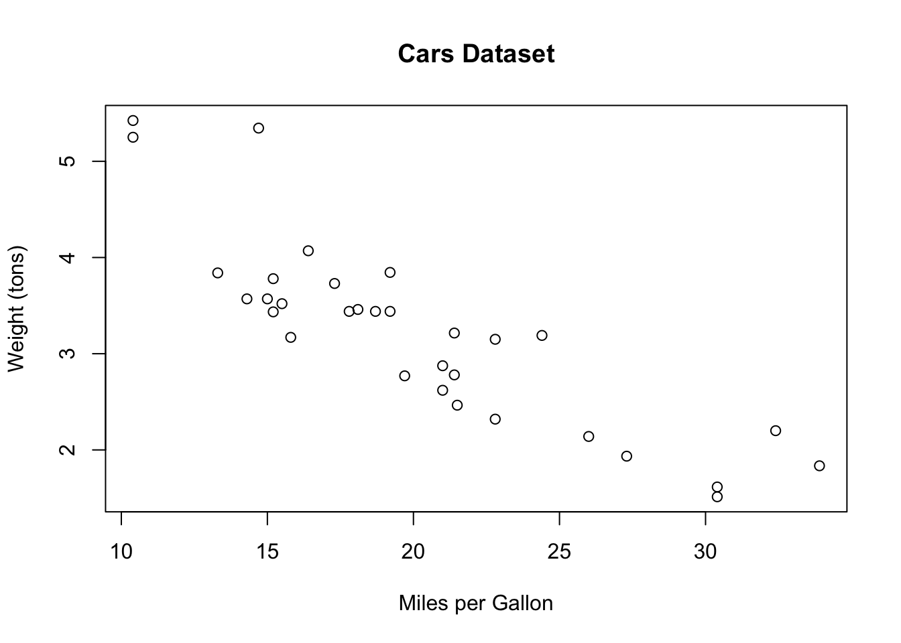

5 R Script Template
In this example, we’ll begin with data science question and answer it in R. We’ll go through these scripts line by line to show how we can use R. To follow along, copy each of these lines and paste them in your R Script (top left quadrant). Once it’s pasted there, we can run each line and view the output in the R Console (bottom left quadrant).
5.1 Cars - Motor Trends Magazine Data
The data was extracted from the 1974 Motor Trend US magazine, and comprises fuel consumption and 10 aspects of automobile design and performance for 32 automobiles (1973–74 models).
Load the dataset - again this is a pre-loaded dataset, but let’s call on it so we can bring it into our global environment.
## mpg cyl disp hp drat wt qsec vs am gear carb
## Mazda RX4 21.0 6 160 110 3.90 2.620 16.46 0 1 4 4
## Mazda RX4 Wag 21.0 6 160 110 3.90 2.875 17.02 0 1 4 4
## Datsun 710 22.8 4 108 93 3.85 2.320 18.61 1 1 4 1
## Hornet 4 Drive 21.4 6 258 110 3.08 3.215 19.44 1 0 3 1
## Hornet Sportabout 18.7 8 360 175 3.15 3.440 17.02 0 0 3 2
## Valiant 18.1 6 225 105 2.76 3.460 20.22 1 0 3 1The head() function is a quick function that prints out the first few rows of a dataset.
What’s exactly is mtcars?
## [1] "data.frame"It’s a data.frame. Data Frames have a different storage than time series. You can also view this dataframe by clicking on the mtcars dataframe in your global environment. What are the dimensions of this dataframe? How many rows and columns does it have?
## [1] 32 11## [1] 32## [1] 11We have 32 rows and 11 columns within this dataframe.
What are our column names?
## [1] "mpg" "cyl" "disp" "hp" "drat" "wt" "qsec" "vs" "am" "gear"
## [11] "carb"What are our row names (aka the make of the car)?
## [1] "Mazda RX4" "Mazda RX4 Wag" "Datsun 710"
## [4] "Hornet 4 Drive" "Hornet Sportabout" "Valiant"
## [7] "Duster 360" "Merc 240D" "Merc 230"
## [10] "Merc 280" "Merc 280C" "Merc 450SE"
## [13] "Merc 450SL" "Merc 450SLC" "Cadillac Fleetwood"
## [16] "Lincoln Continental" "Chrysler Imperial" "Fiat 128"
## [19] "Honda Civic" "Toyota Corolla" "Toyota Corona"
## [22] "Dodge Challenger" "AMC Javelin" "Camaro Z28"
## [25] "Pontiac Firebird" "Fiat X1-9" "Porsche 914-2"
## [28] "Lotus Europa" "Ford Pantera L" "Ferrari Dino"
## [31] "Maserati Bora" "Volvo 142E"How do we extract individual columns/variables from this dataframe?
## mpg
## Mazda RX4 21.0
## Mazda RX4 Wag 21.0
## Datsun 710 22.8
## Hornet 4 Drive 21.4
## Hornet Sportabout 18.7
## Valiant 18.1
## Duster 360 14.3
## Merc 240D 24.4
## Merc 230 22.8
## Merc 280 19.2
## Merc 280C 17.8
## Merc 450SE 16.4
## Merc 450SL 17.3
## Merc 450SLC 15.2
## Cadillac Fleetwood 10.4
## Lincoln Continental 10.4
## Chrysler Imperial 14.7
## Fiat 128 32.4
## Honda Civic 30.4
## Toyota Corolla 33.9
## Toyota Corona 21.5
## Dodge Challenger 15.5
## AMC Javelin 15.2
## Camaro Z28 13.3
## Pontiac Firebird 19.2
## Fiat X1-9 27.3
## Porsche 914-2 26.0
## Lotus Europa 30.4
## Ford Pantera L 15.8
## Ferrari Dino 19.7
## Maserati Bora 15.0
## Volvo 142E 21.4We can also extract the vector of data using the $ operator.
## [1] 21.0 21.0 22.8 21.4 18.7 18.1 14.3 24.4 22.8 19.2 17.8 16.4 17.3 15.2 10.4
## [16] 10.4 14.7 32.4 30.4 33.9 21.5 15.5 15.2 13.3 19.2 27.3 26.0 30.4 15.8 19.7
## [31] 15.0 21.4What are the statistics like for each variable?
## mpg cyl disp hp
## Min. :10.40 Min. :4.000 Min. : 71.1 Min. : 52.0
## 1st Qu.:15.43 1st Qu.:4.000 1st Qu.:120.8 1st Qu.: 96.5
## Median :19.20 Median :6.000 Median :196.3 Median :123.0
## Mean :20.09 Mean :6.188 Mean :230.7 Mean :146.7
## 3rd Qu.:22.80 3rd Qu.:8.000 3rd Qu.:326.0 3rd Qu.:180.0
## Max. :33.90 Max. :8.000 Max. :472.0 Max. :335.0
## drat wt qsec vs
## Min. :2.760 Min. :1.513 Min. :14.50 Min. :0.0000
## 1st Qu.:3.080 1st Qu.:2.581 1st Qu.:16.89 1st Qu.:0.0000
## Median :3.695 Median :3.325 Median :17.71 Median :0.0000
## Mean :3.597 Mean :3.217 Mean :17.85 Mean :0.4375
## 3rd Qu.:3.920 3rd Qu.:3.610 3rd Qu.:18.90 3rd Qu.:1.0000
## Max. :4.930 Max. :5.424 Max. :22.90 Max. :1.0000
## am gear carb
## Min. :0.0000 Min. :3.000 Min. :1.000
## 1st Qu.:0.0000 1st Qu.:3.000 1st Qu.:2.000
## Median :0.0000 Median :4.000 Median :2.000
## Mean :0.4062 Mean :3.688 Mean :2.812
## 3rd Qu.:1.0000 3rd Qu.:4.000 3rd Qu.:4.000
## Max. :1.0000 Max. :5.000 Max. :8.000Notice that now the summary() function is printing out the summary statistics for each column (aka variable) within our dataframe (mtcars)
Now that we’re familiar with our dataset, let’s plot the data to answer our question - what’s the relationship between car weight and miles per gallon?

Just as we suspected, the lighter the car, the higher the miles per gallon.
5.1.1 Entire Script
# load the data - the mtcars dataset is pre-built
data('mtcars')
# print out the first few rows of the dataset using the head() function
head(mtcars)
# print the class of the mtcars dataset
class(mtcars)
# dimensions of the mtcars dataframe
dim(mtcars)
# number of rows
nrow(mtcars)
# number of columns
ncol(mtcars)
# column names
colnames(mtcars)
# row names
rownames(mtcars)
# selecting the miles per gallon column
mtcars["mpg"]
# selecting the vector of the mpg column
mtcars$mpg
# printing a summary of the dataframe
summary(mtcars)
# plot weight of cars vs miles per gallon
plot(x = mtcars$mpg, y = mtcars$wt, xlab = "Miles per Gallon", ylab = "Weight (tons)", main = "Cars Dataset")5.1.2 Saving your plot
We can save any plot from the R plot window. Simply navigate to the Plots tab and select Export then Save As Image.
Figure 5.1: Save As Image